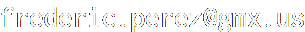

Frederic Perez
Computer Graphics Fellow, Medical Imaging Researcher, and GTD Practitioner
Networks
About
Contact
📧 
📫
Frederic Perez
Horizons Optical
C/ Alcalde Barnils, 72
E-08174 Sant Cugat del Vallès
☎️ +34 93 116 07 80
Inspired by Mark Tyrell & Tim Van Damme, Design by Mark Tyrrell.